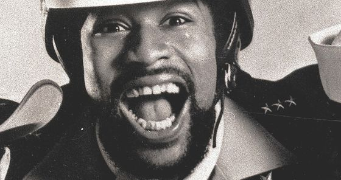

Victor Willis triunfa en la corte por un reclamo sobre derechos de autor
A California judge has sided with the original lead singer of the Village People, Victor Willis, dismissing a suit brought on by two publishing companies – Scorpio Music and Can't Stop Productions – that tried to prevent Willis from reclaiming the rights to "YMCA" and 32 other Village People tracks, reports The New York Times.
Willis, who filed the suit last August, cited a provision added to copyright laws in 1978 that grants artists "termination rights," allowing them to reclaim ownership and control of songs they'd signed away 35 years after their initial release. This means that starting in 2013 artists from Bob Dylan to Bruce Springsteen would be able to reclaim ownership of their hit records, allowing them to license their music to advertisers, sell it to another label, or even distribute it themselves. Meanwhile, labels that rely on back catalog sales could be hit hard.
The publishing companies, however, claimed that Willis' situation was different from the aforementioned songwriters (and others like them): since Willis was hired to join the Village People, he was thus an employee of the company, making his songs "works for hire." Last August, Steven Marks, a lobbyist for the Recording Industry Association of America, told the Times that the RIAA believed "termination right doesn't apply to most sound recordings" because the masters were created as "works for hire."
But Judge Barry Ted Moskowitz's ruling has set a new precedent. In his decision Judge Moskowitz wrote, "The purpose of the Act was to 'safeguard authors against unremunerative transfers' and address 'the unequal bargaining position of authors,' resulting in part from the impossibility of determining a work's value until it has been exploited."
He added, "Under plaintiffs' interpretation, it would be more difficult to terminate an individual grant than it would be to make it in the first place."
Willis' lawyer, Brian D. Caplan, noting that this was the first case to deal with interpretations of "termination rights," said, "The significance of the ruling is that one author who gives a grant to a publishing company has the right to recapture the copyright interest he created 35 years ago regardless of what other co-authors do or don't do, and that the author gets back that which he created regardless of the income stream he agreed to over 35 years ago.”
The decision comes in the wake of a tumultuous time for the recording industry, starting with Eminem's precedent-setting court case last year that established artists are entitled to 50 percent of receipts from digital sales. More recently, Toto has sued their label, Sony, over unpaid royalties, as have artists including Kenny Rogers, Peter Frampton, and Chuck D.